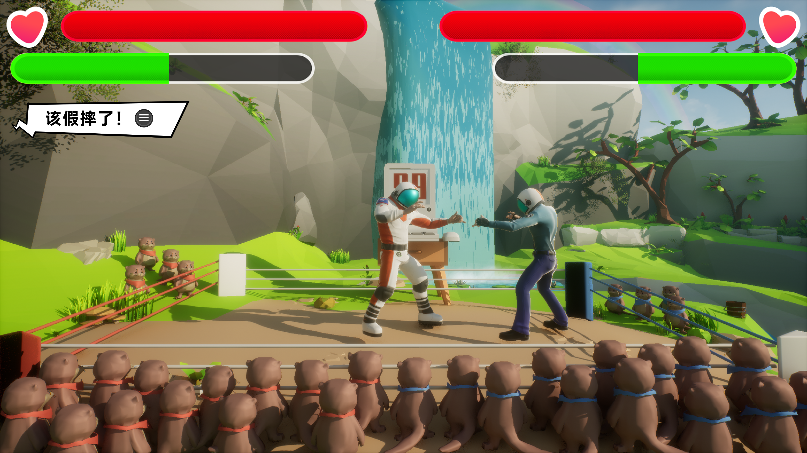
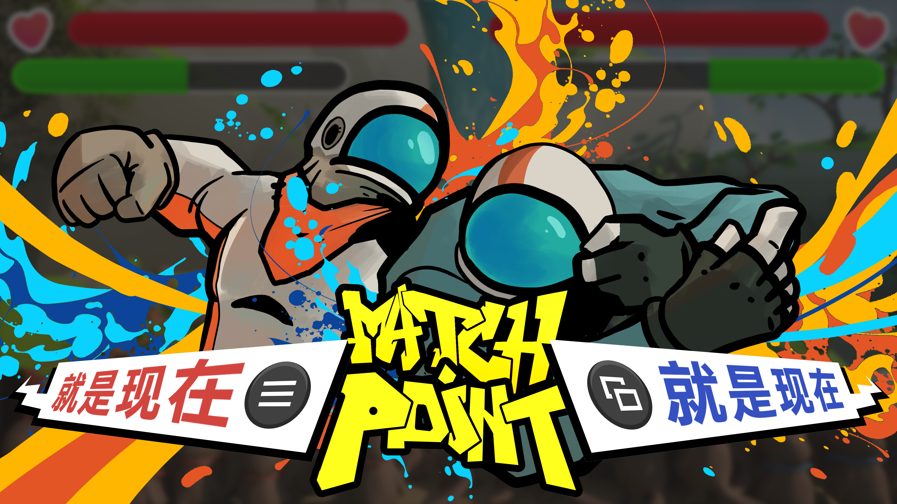
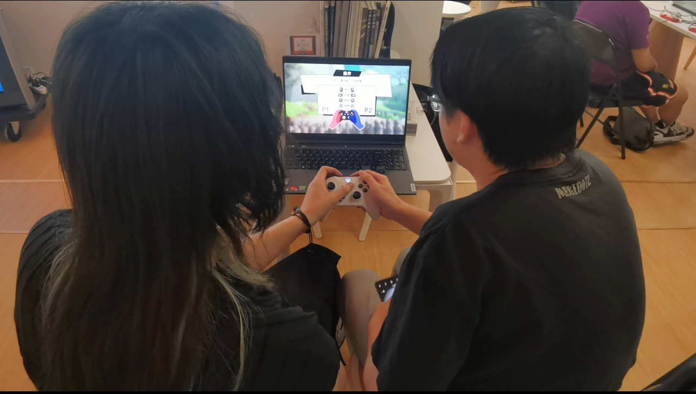
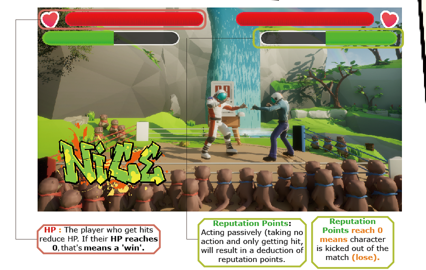
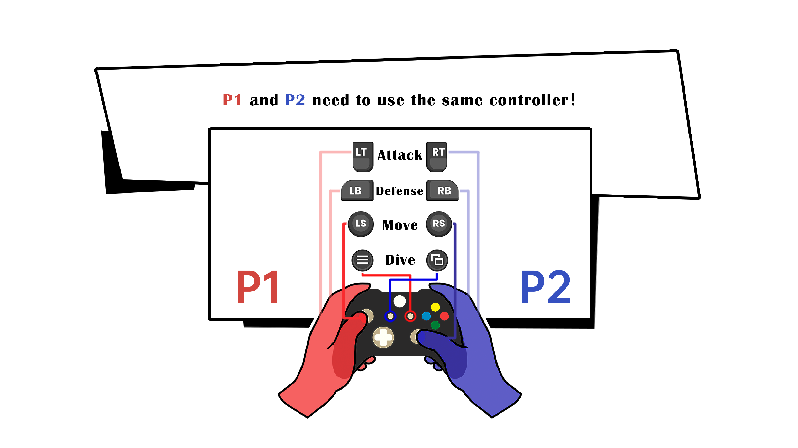
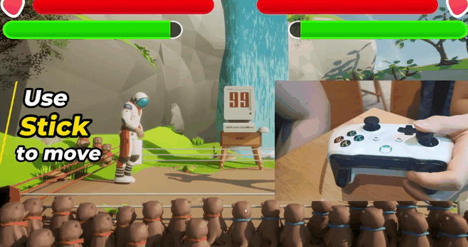
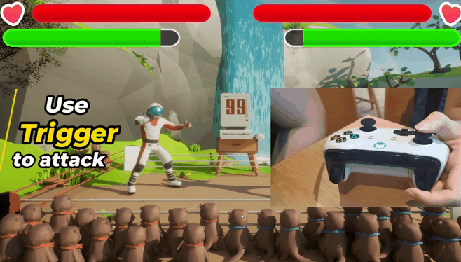
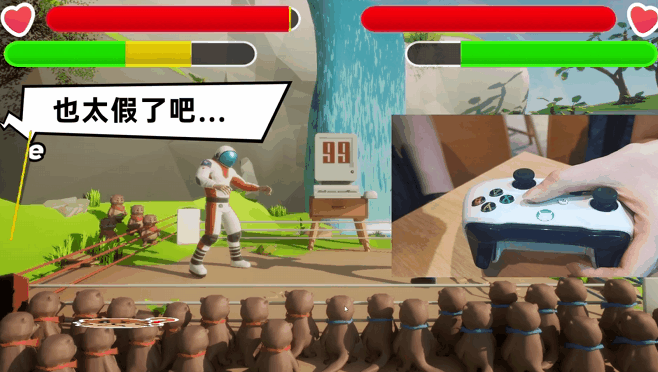
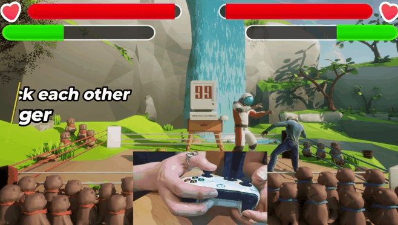
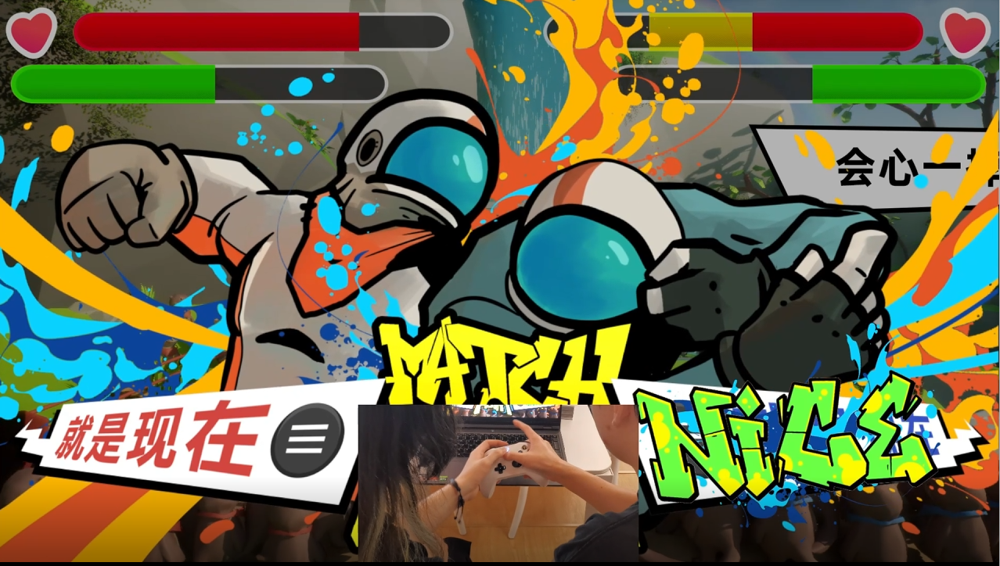

角色格斗Character combat
攻击、防御、移动与血量结算，维持格斗游戏的基本结构。
Attack, defense, movement and HP resolution preserve the basic structure of a fighting game.



《假赛拳王》是一款把屏幕内格斗与屏幕外身体互动绑在一起的双人格斗游戏。两名玩家分别握住同一个手柄的两端，操控两名角色进行对战。
项目来自 Global Game Jam 主题“Touch”。我们将“触碰”延展成一种现实层面的竞争：玩家不仅在屏幕里彼此攻击，还要在关键时刻越过自己的控制区域，抢先按到位于对方那一侧的按键。
Rigged Champion is a two-player fighting game that locks on-screen combat together with off-screen physical interaction. Two players grip the same controller from opposite ends and control two fighters in a single match.
The project was built for the Global Game Jam theme “Touch.” We extended “touch” into a real competitive situation: players fight each other on screen, but at key moments they must also reach across the controller and hit buttons located on the opponent's side.
攻击、防御、移动与血量结算，维持格斗游戏的基本结构。
Attack, defense, movement and HP resolution preserve the basic structure of a fighting game.

同一只手柄上互相干扰、抢位、越界和争夺时机的身体动作。
What creates the real tension is the bodily struggle over the same controller: interference, overreaching, stealing space and racing for timing.
我们尝试把格斗游戏的胜利逻辑反过来：玩家不是想办法把对手打倒，而是要让自己的角色尽可能挨打。但如果表现得太消极，就会暴露“假赛”意图，被系统惩罚。
于是，玩家必须一边维持“我在认真打”的表象，一边寻找让自己输掉比赛的最佳时机。
We inverted the usual logic of a fighting game. Players do not try to knock the opponent out; they try to get their own character hit as efficiently as possible. But acting too passively exposes the fixed match and triggers punishment.
As a result, each player has to preserve the appearance of serious competition while secretly searching for the best moment to lose.

游戏通过两条并行数值，把“认真比赛”和“故意输掉”同时纳入系统：HP 决定谁能靠挨打获胜，声望值则约束玩家不能把“假赛”演得太明显。
The system uses two parallel meters so that “playing seriously” and “trying to lose” can coexist: HP determines who can win by getting hit, while Reputation Points prevent the performance of a fixed match from becoming too obvious.
角色被击中时 HP 会下降。与传统格斗游戏相反，当自己的 HP 归零时，反而获得胜利。
HP decreases when the character gets hit. Unlike a traditional fighting game, your own character wins when its HP reaches 0.
如果玩家表现得过于消极、明显不像在认真比赛，系统会扣除声望值。声望值归零时，角色会因为“假赛太明显”而被判出局。
If a player behaves too passively and no longer looks like they are genuinely competing, the system deducts reputation points. When reputation reaches 0, the player is knocked out for making the fixed match too obvious.
两名玩家需要同时使用同一个手柄。每个人只控制自己一侧的按键：攻击、防御、移动与假摔键分散在手柄两端，因此“身体如何握住控制器”也成为了玩法的一部分。
这意味着对抗不再只发生在屏幕内部。玩家的手、手臂、姿势和越界动作都被纳入系统，游戏对抗因此自然转化为体感对抗。
Both players use the same controller at the same time. Each player owns only one side of the pad: attack, defense, movement and dive are split across the controller, so the way the body grips it becomes part of play.
This means the confrontation no longer lives only inside the screen. The players' hands, arms, posture and overreaching motions are all pulled into the system, shifting game conflict into physical conflict.

Match Point要求玩家“主动假摔”，把抢按键这件事推向高潮。
The basic moves preserve the recognizability of a fighting game, but the mechanics that truly push the confrontation into its most entertaining state are Dive and Match Point: one asks players to fake a fall, while the other turns button-racing into the climax of the match.

通过摇杆控制角色走位，为接触、冲突与失败创造位置。
Use the stick to position the fighter and set up contact, conflict and failure.

维持认真比赛的表象，否则就会被系统判定为太假。
Maintain the appearance of genuinely competing, or the system will judge the match as too fake.

主动假摔是高风险动作。玩家需要越过自己的控制区域，按到位于对方那一侧的特殊按键，才能触发假摔。它能快速降低自己的 HP，却也会大幅损失声望值。
A deliberate dive is a high-risk move. The player must reach across their own control zone and press a special button on the opponent's side to trigger it. It lowers the player's HP quickly, but also causes a major loss of reputation.

当双方同时攻击时，会触发 Match Point。此时谁先按到赛点键，谁就能完成一次“完美假摔”——大幅减少自身 HP，同时不损失声望。这是“屏幕对抗”与“体感对抗”最强烈叠合之时。
When both players attack at the same time, Match Point is triggered. Whoever reaches the Dive button first performs a Perfect Dive — losing a large amount of HP without sacrificing Reputation. It is the moment when screen-based combat and physical confrontation overlap most intensely.
